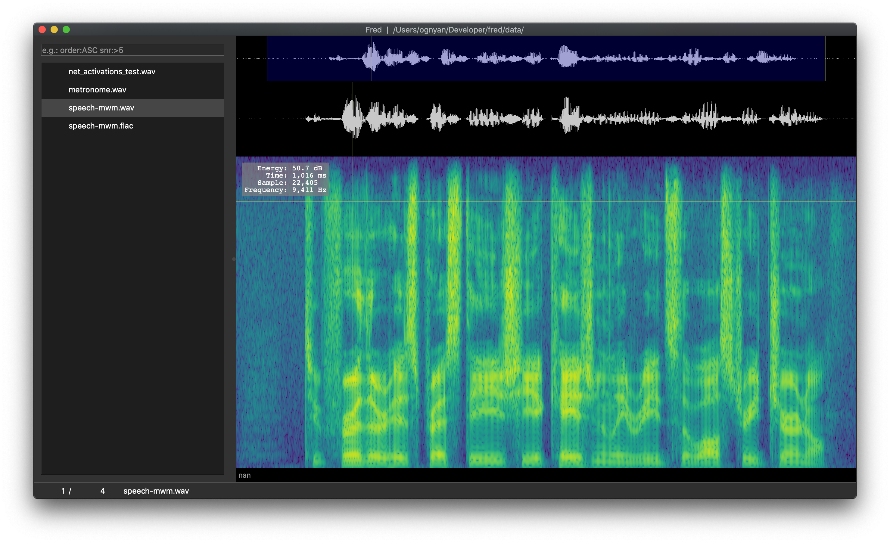
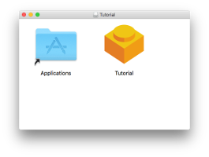

Packaging a python GUI Application
Ogi Moore
December 28, 2019
Who Am I
Ogi Moore
github.com/j9ac9k
Technologist @ Sensory
What are we talking about?
How can we distribute our python GUI applications to a widespread audience…
Difference between a library and an application
my own definitions, and I am not an authority on this matter…
“library” is meant to be used by other developers
- NumPy, requests, etc..
“application” is meant to be used by end-users
- youtube-dl, spyder, qutebrowser…
Libraries should be packaged for developers
- Create python wheel with setuptools (or flit)
- Upload to pypi, and then anyone can install via pip
pip install <library>Applications need to be distributed differently
- users may or may not have python installed
- if they don’t the last thing you want to maintain is a set of instructions that universally apply for setting up a python environment on each OS
- users may not feel comfortable interacting with the command line
- you may use a dependency that is not on PyPI
How do we make a GUI application?
Qt (pronunced “cute”, not “cue-tea”)
- cross-platform framework to create modern and native looking GUIs
- considered most full-featured, powerful option available for python users
- alternatives like tkinter, wxPython, and kivy exist, and in some cases may be preferred
- realistically most “alternatives” are effetively web services
Little more on Qt
- C++ framework with python bindings available (PySide2, PyQt5)
- best to abstract differences away by using
qtpylibrary
- best to abstract differences away by using
- it’s a huge framework
- great add ons
- pyqtgraph
- pytest-qt
Screenshot

How should we deploy a GUI App?
- Make it into a wheel and upload to PyPI?
- Does not address the problems listed earlier…end users may not be developers
- can we create a “native” installer like any other application we install on our machines?
Something like this would be nice


Sure we can!
but it’s tricky…
The fbs library
- with fbs, we can create native installers
- generate executables can be launched like any other application you install
- has awesome
fbs startprojectcommand to create a bare minimum example that you can modify for your project
fbs does have requirements…
- needs to be a
PyQt5/PySide2application - project must have specific directory structure
base.jsonto define project parametersrequirements/base.txtto define dependenciesin my CI process I just run
cp requirements.txt requirements/base.txt
- docs are very good, source code is easy to read too…
How to use fbs?
fbs freeze- Converts your python package into a stand-alone executable (via pyinstaller)fbs installer- Bundles your executable into a single file installer- AppSetup.exe for Windows (using
NSIS) - App.dmg for macOS (using
create-dmg)create-dmgis bundled withfbs
- App.deb for Ubuntu/Debian (using
fpm)
- AppSetup.exe for Windows (using
More considerations
- Windows installers can only be created on windows machines
- same with macOS and linux
- Ubuntu needs a
fpmto make the .deb packages - Windows needs
pypiwin32, Windows10 SDK, Visual C++ redistributables andNSIS - Really annoying to setup a bunch of VMs and do manually
Runs from source != executable will run
- Executable creation may not capture your dependencies correctly, or something else can go wrong
- with NumPy 1.17.0 pyinstaller did not grab
numpy.random.common - SciPy 1.3.1 → 1.3.2+ had Windows based .dll’s relocated, pyinstaller did not grab them
- app referencing the current git commit hash
- writing a log file to the project main directory
- with NumPy 1.17.0 pyinstaller did not grab
Testing the Executable
- Start the application wait 10 seconds, kill it by name
- If you get an error when killing the application, it means it didn’t start successfully, and you need to investigate more
- If it kills without an error code, it means your application was running üëç
- Trickier on windows, need to make into non-windowed executable first, test, then make into windowed executable
How to test executables
# Linux
target/App/App & sleep 10 ; kill $!
# macOS
(target/App.app/Contents/MacOS/App) & sleep 10 ; kill $!
# Windows
start target\App\App.exe & waitfor timeVoid /t 10 2>NUL & taskkill /im App.exe /fCI to the rescue
- Many CI services free for open source projects
- azure pipelines
- travis
- github actions
- make installers artifacts

Demo Fred
Bonus - Code-Signing
- code-sign your application to skip scary warnings when installing
- isn’t free…
Wrap up
- Qt framework is amazing, if you need to make a GUI application, and want to use python, it is a fantastic way to go
fbscan bundle your GUI application into an installable package by leveraging pyinstaller and other dependencies- process is very fragile, care must be taken to ensure your application was bundled successfully
- pin your runtime dependencies
- use a CI service, this is really a pain to do manually
Future Work
- Create a cookie cutter template that generates the right directory strcture and does simple CI configs from the get go
References
- macOS walkthrough - https://git.io/JeAfJ
- fbs
- https://build-system.fman.io/
- https://github.com/mherrmann/fbs
- pyinstaller - https://www.pyinstaller.org/
- Qt - https://doc.qt.io/qt-5/
- qtpy - https://github.com/spyder-ide/qtpy
Content Created Using
- reveal.js - javascript library used to show presentation
- pandoc - contents started off as markdown, used pandoc to convert to revealjs
- fontawesome - for some icons
- sublimetext - editor I decided to use